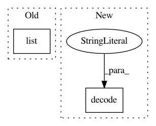

50f9caba54a250607938b91b6564a76d0157a53f,tensorflow_encrypted/convert/register.py,,maxpool,#Any#Any#Any#,172
Before Change
input = converter.outputs[inputs[0]]
return tf.nn.max_pool(input, list(node.attr["ksize"].list.i),
list(node.attr["strides"].list.i),
node.attr["padding"].s)
After Change
ksize = node.attr["ksize"].list.i
s = node.attr["strides"].list.i
padding = node.attr["padding"].s.decode("ascii")
pool_size = [ksize[1], ksize[2]]
strides = [s[1], s[2]]
shape = [int(i) for i in input.shape]
In pattern: SUPERPATTERN
Frequency: 4
Non-data size: 2
Instances
Project Name: mortendahl/tf-encrypted
Commit Name: 50f9caba54a250607938b91b6564a76d0157a53f
Time: 2018-10-16
Author: yann.dupis@gmail.com
File Name: tensorflow_encrypted/convert/register.py
Class Name:
Method Name: maxpool
Project Name: keras-team/autokeras
Commit Name: 5b8864d1863ac0474db8b657f023341686f4b1fb
Time: 2020-09-24
Author: jhfjhfj1@gmail.com
File Name: autokeras/preprocessors/encoders.py
Class Name: Encoder
Method Name: __init__
Project Name: MIC-DKFZ/trixi
Commit Name: 839dc7bfe06f5f60a302e45e9da0a31fbed10622
Time: 2018-04-17
Author: d.zimmerer@dkfz-heidelberg.de
File Name: vislogger/sourcepacker.py
Class Name: SourcePacker
Method Name: gather_sources_and_dependencies